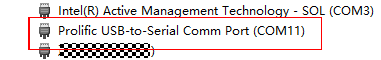
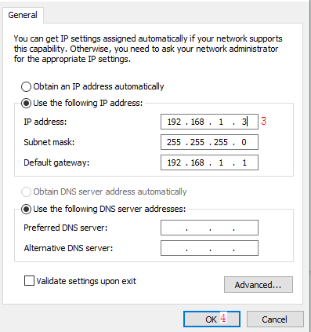
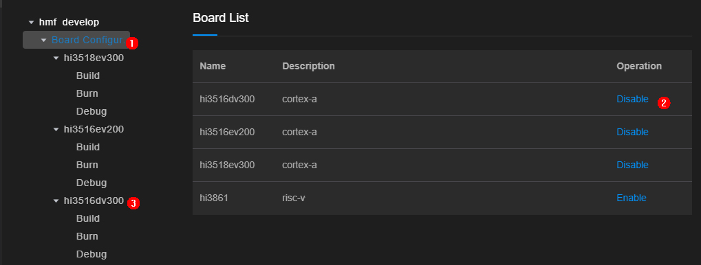
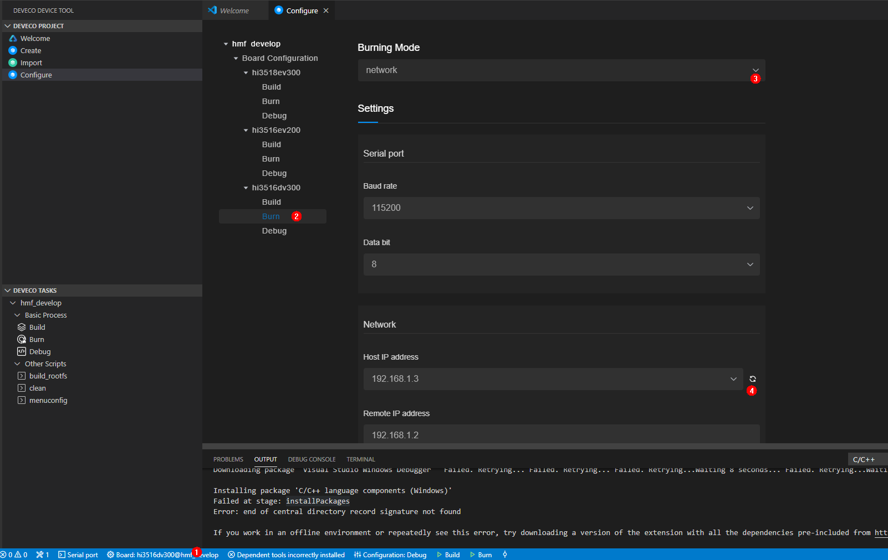
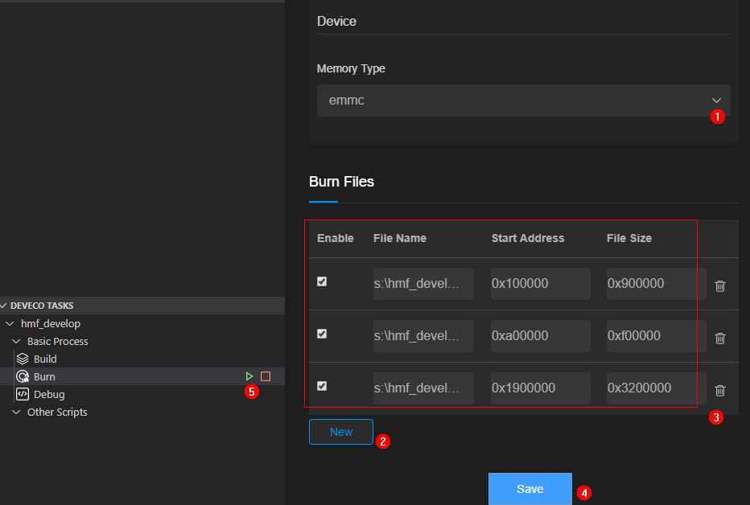
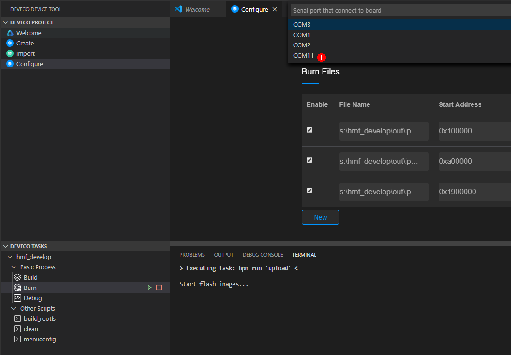
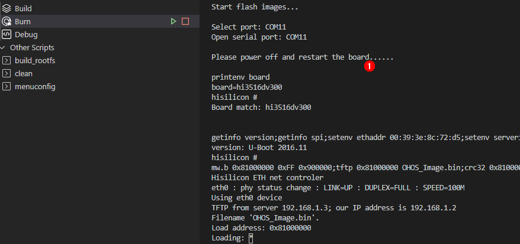
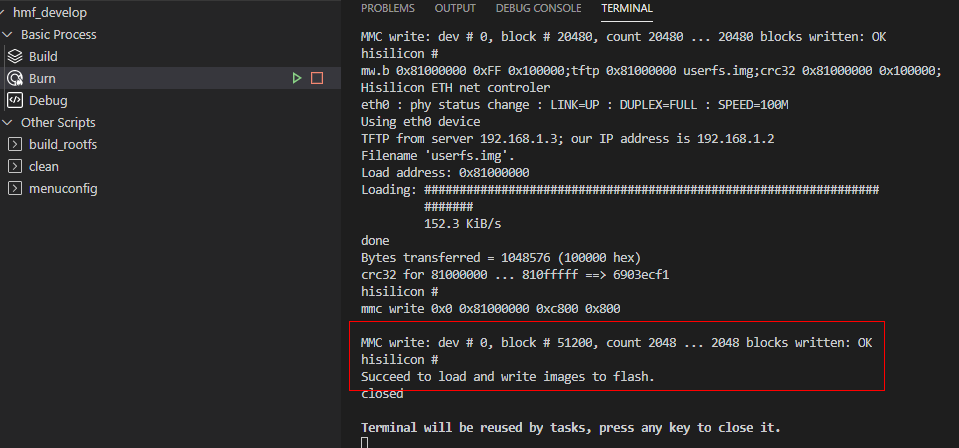
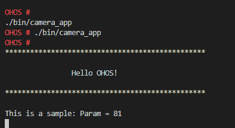

Developing the First Example Program Running on Hi3516¶
This section describes how to modify, compile, burn, and run the first program, and finally print Hello OHOS! on the develop board.
Acquiring Source Code¶
You need to acquire Hi3516 source code and download it on a Linux server. For more obtaining methods, see Source Code Acquisition.
Modifying a Program¶
The code of helloworld.c in the applications/sample/camera/app/src directory is shown in the following example. You can customize the content to be printed. For example, you can change OHOS to World. You can use either C or C++ to develop a program.
#include <stdio.h>
#include "los_sample.h"
int main(int argc, char **argv)
{
printf("\n************************************************\n");
printf("\n\t\tHello OHOS!\n");
printf("\n************************************************\n\n");
LOS_Sample(g_num);
return 0;
}
Compiling Code¶
On the Linux server, execute the build.py script stored in the root directory of the source code package. The result files in the out/ipcamera_hi3516dv300 directory.
python build.py ipcamera_hi3516dv300 -b debug
Burning Images¶
This method applies only to development boards that have network ports, for example, the Hi3516DV300 development board. The PC and the development board must be connected to the same network through a network cable.
NOTICE: If the development board fails to connect to the PC, check whether the firewall settings are correct. For details, see problem 2 in FAQs.
Install the USB-to-serial adapter driver and obtain the serial port number.
Figure 1 Successful driver installationPower on the board and connect the serial port of the board to the Windows workstation.
Install the driver.
Open Device Manager, and then check and record the port number of Prolific USB-to-Serial Comm Port. In this example, the port number is COM11.
After the driver is installed, right-click the device to uninstall it if a yellow exclamation mark is displayed on the device icon. After the driver is reinstalled, restart the PC as required.
Add an IP address 192.168.1.3 in this example to the interconnected port of the board.
Figure 2 Adding an IP addressChoose Control Panel > Network and Internet-> Network Connections. Right-click the network adapter connected to the board, and choose Properties from the shortcut menu.
Double-click Internet Protocol Version 4 (TCP/IPv4) and right-click Properties from the shortcut menu.
Set the IP address and gateway according to the preceding figure.
Click OK to save the configuration.
Choose Board Configuration and enable the hi3516dv300 board in the Board List area. The hi3516dv300 board will then be added to the Board Configuration list.
Figure 3 Adding the hi3516dv300 boardOpen the IDE and configure the content to burn over the network by following the sequence in the following figure.
Figure 4 Network configuration on the IDE

Choose the Hi3516dv300 board.
Click Burn.
Set Burning Mode to network.
Select the IP address 192.168.1.3 from the drop-down list after clicking the refreshing icon.
Select the flash memory type and set the burning addresses.
Figure 5 Burning parameter configuration

Select emmc from the Memory Type drop-down list as the flash memory type.
Click New in the Burn Files area to add three file configuration records, fill OHOS_Image.bin, rootfs.img, and userfs.img in the out/ipcamera_hi3516dv300 directory to File Name one by one, and set the start addresses and file sizes according to the configuration in the preceding figure.
Click Save.
Click Burn to start burning.
Click the text box on the top area of the IDE and select a serial port number from the drop-down list, for example, COM11.
Figure 6 Selecting the serial port that is connected to the boardStart burning. If the following prompt message is displayed, you need to manually power off and then restart the board.
Figure 7 Prompt message

Check that the burning is successful.
Figure 8 Successful burning
Running an Image¶
Connect to a serial port.
NOTICE: If the sconnection fails, rectify the fault
by referring to problem 5 in the FAQs section.Figure 9 Serial port connection

Click Serial port to enable it.
Enter the serial port number “com11” and press Enter until hisillicon is displayed.
Go to step 2 if the board is started for the first time or the startup parameters need to be modified; go to step 3 otherwise.
(Mandatory when the board is started for the first time) Modify the bootcmd and bootargs parameters of U-boot. You need to perform this step only once if the parameters need not to be modified during the operation. The board automatically starts after it is reset.
NOTICE: The default waiting time in the U-boot is
2s. You can press Enter to interrupt the waiting and run the
reset command to restart the system after “hisillicon” is
displayed.Table 1 Parameters of the U-boot
Command
Description
setenv bootcmd “mmc read 0x0 0x80000000 0x800 0x4800; go 0x80000000”;
Run this command to read content that has a size of 0x4800 (9 MB) and a start address of 0x800 (1 MB) to the memory address 0x80000000.
setenv bootargs “console=ttyAMA0,115200n8 root=emmc fstype=vfat rootaddr=10 M rootsize=15 M rw”;
Run this command to set the output mode to serial port output, baud rate to 115200, data bit to 8, rootfs to be mounted to the emmc component, and file system type to vfat.
rootaddr=10 M, rootsize=15 M rw indicates the start address and size of the rootfs.img file to be burnt, respectively. The file size must be the same as that of the compiled file in the IDE.
saveenv
saveenv means to save the current configuration.
reset
reset means to reset the board.
NOTICE: go 0x80000000 (optional) indicates that
the command is fixed in the startup parameters by default and the
board automatically starts after it is reset. If you want to
manually start the board, press Enter in the countdown phase
of the U-boot startup to interrupt the automatic startup.Run the reset command and press Enter to restart the board. After the board is restarted, OHOS is displayed when you press Enter.
Figure 10 System startup

Running a Program¶
In the root directory, run the ./bin/camera_app command to operate the demo program. The following figure shows the compilation result.
Figure 11 Program started successfully
